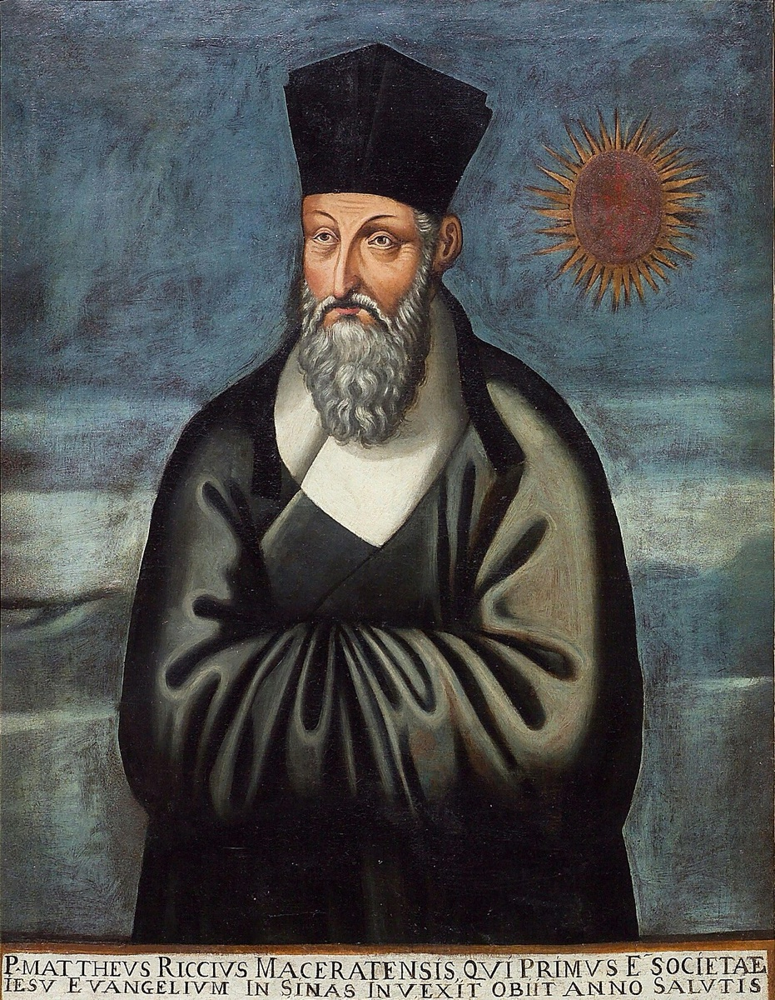

Časni sluge Božji
Svećenik, misionar
Časni sluga Božji Matej Ricci
1552. – 1610.
Isusovac iz Macerate koji je gotovo tri desetljeća djelovao u Kini, gdje je prihvatio jezik i običaje učenjaka te kroz prijateljstvo, znanost i knjige na kineskom otvarao put evanđelju sve do Pekinga.
Tekst je sažet i prilagođen uz pomoć umjetne inteligencije.

Izvor slike
- Spomendan
- 11. svibnja
- Zaštitništvo
- Nije navedeno u izvoru
- Životni vijek
- 1552. – 1610.
- Djelovanje
- Misije i evangelizacija · Pisanje, znanost i umjetnost · Dijalog i pomirenje
- Razdoblje
- 16., 17. stoljeće
- Crkveni naslov
- Časni sluga Božji
- Rođenje
- 6. listopada 1552., Macerata, Italija
- Država rođenja
- Italija
- Datum smrti
- 11.05.1610.
- Mjesto smrti/mučeništva
- Peking, Kina
- Uloga
- Svećenik, misionar
- Mučenik
- Ne
- Ostale oznake
- Časni sluga Božji – nema liturgijskog spomendana; u direktoriju naveden na dan smrti.
- Pripadnost
- Isusovac
- Drugi oblici imena
- Matteo Ricci · Matteo
- Priznanje herojskih kreposti
- 17. prosinca 2022., papa Franjo
- Počivalište
- Groblje Zhalan, Peking, Kina
U kalendaru zbirke naveden je dan smrti.
Životopis
Matej Ricci rođen je 6. listopada 1552. u Macerati, u tadašnjoj Papinskoj Državi. Nakon klasične naobrazbe u rodnom gradu otišao je u Rim na studij prava, ali je 1571. ondje stupio u Družbu Isusovu. Na Rimskom kolegiju uz filozofiju i teologiju učio je matematiku, kozmografiju i astronomiju kod Kristofora Claviusa, što će poslije snažno obilježiti njegovo poslanje.
Godine 1578. otplovio je iz Lisabona prema Indiji i nekoliko godina djelovao u Goi i Kočinu. U Makao je stigao 7. kolovoza 1582., a uskoro se s Michelom Ruggierijem nastanio u Zhaoqingu, na kineskom kopnu. Misionarska kuća privlačila je posjetitelje kartama, satovima i slikama, a Ricci je strpljivo učio jezik i kineske klasike. Nakon protjerivanja 1589. nastavio je rad u Shaozhouu, zatim u Nanchangu i Nanjingu, sve više prihvaćajući odijevanje i način ophođenja kineskih učenjaka.
U Peking je ušao 24. siječnja 1601., pozvan na dvor cara Wanlija, i postao prvi Europljanin koji je ušao u Zabranjeni grad. Kinezi su ga zvali Li Madou. Na kineskom je pisao o prijateljstvu, moralu i vjeri, a najpoznatije mu je djelo katekizam Istinsko značenje Gospodara Neba. Izradio je kartu svijeta na kineskom i s učenjakom Xu Guangqijem preveo Euklidove Elemente. Prijateljstvo s obrazovanim ljudima, bez političke ili materijalne računice, bilo mu je glavni put navještaja.
Ricci je umro u Pekingu 11. svibnja 1610., nakon dvadeset i sedam godina provedenih u Kini. Car je dopustio da bude pokopan u kineskoj zemlji, što je za stranca bila rijetka čast. Njegov su rad nastavili kineski suradnici i obraćenici, koje se pamti kao stupove mlade Crkve u Kini.
Život i nasljeđe
Postupak za Riccijevo proglašenje blaženim pokrenut je u biskupiji Macerata osamdesetih godina 20. stoljeća, a dokumentacija biskupijske faze predana je u Rim 2014. Nakon što su teolozi, a potom kardinali i biskupi Dikasterija za kauze svetih potvrdili da je kršćanske kreposti živio u herojskom stupnju, papa Franjo je 17. prosinca 2022. odobrio proglašenje dekreta o njegovim herojskim krepostima. Za proglašenje blaženim potrebno je još priznanje čuda po njegovu zagovoru.
Riccijev grob nalazi se na groblju Zhalan u Pekingu; lokalne su ga vlasti obnovile i ondje se i danas štuje. Papa Benedikt XVI. istaknuo je 2010., o četiristotoj obljetnici njegove smrti, da je Ricci mudro povezivao navještaj evanđelja s dijalogom kultura, ne zaboravljajući ni zaslugu kineskih suradnika poput Xu Guangqija i Li Zhizaoa. Papa Franjo nazvao ga je čovjekom susreta koji je nadišao položaj stranca. Uz Marka Pola jedini je stranac istaknut na pekinškom spomeniku Milenija među velikanima kineske povijesti.
Tekst je sažet i prilagođen uz pomoć umjetne inteligencije.
Pročitaj više na izvornoj stranici ↗